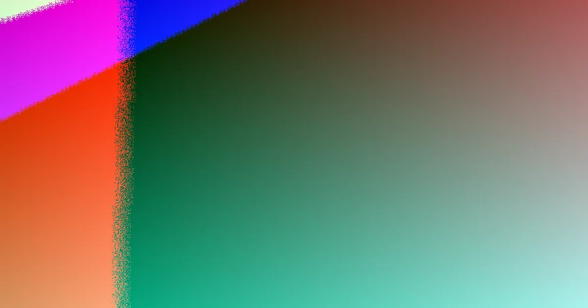

Sydney website quotes become comparable when they separate build scope, content readiness, platform, ownership and ongoing care. A standard business site is commonly quoted around four to twelve weeks, while page count, product data, integrations, redirects and support decide the final effort. Ask for exclusions, handover terms and what is included before comparing headline prices. A written quote should expose the work behind the number.
For local buyers, web design sydney quotes explained a buyer's lens for comparing website proposals in Sydney
Web Design Sydney Quotes Explained Explained
A Sydney website quote is only useful when it names the job behind the price. One business may want clearer service pages and a simpler enquiry path. Another may need a redesign that keeps existing search visibility, or a store with product data, checkout and trust signals. Those are different builds, even if both arrive as a tidy total.
Before comparing numbers, settle the action the site must prompt, the pages needed, the platform, ownership and ongoing care. For the planning side of that brief, see Web Design Sydney Before You Start: Before You Start.
The inputs that move a quote
Scope is the first lever. Page count, service detail, landing pages, SEO friendly structure and e-commerce functions all add effort. A small service site and a product catalogue should not be priced as if they were the same job.
- Content readiness: supplied copy, image sourcing and copywriting can sit inside or outside the agreement.
- Data and integrations: forms, product data, analytics, bookings or checkout affect build and testing time.
- Redesign risk: redirect mapping and review of pages that already attract search traffic need care.
- After launch: hosting, backups, security, maintenance and editable areas change the real cost of ownership.
Questions to ask before accepting
- Who owns the domain, content, admin access and finished site files?
- Which parts can staff edit without a developer, and which need paid help?
- What hosting, backups, security and maintenance are included after launch?
- For a rebuild, what happens to existing pages, URLs and search visibility?
- Which integrations, forms, product data or content tasks are excluded?
These questions turn a headline figure into a comparable scope. A cheaper quote can be narrower, not better.
Local proof without suburb stuffing
Sydney is not one market. A North Sydney professional practice, a Surry Hills cafe and a Chatswood online retailer need different proof, navigation and calls to action. The point is not to scatter suburb names across the page. It is to match the visitor's decision process.
Coverage across the CBD, Parramatta, the north shore, inner west, beaches, south west and Hills district should shape local confidence, while the offer, price range, platform choice and next step still carry the page.
Who this applies to
This is most useful for Sydney small businesses, sole traders, professional practices, cafes, online retailers and service businesses that need a clearer brief before requesting proposals. It also fits owners of ageing or underperforming sites that must modernise without losing useful search visibility.
It is less useful where the technical specification, copy, design system and development team are already settled. In that case the remaining work is closer to procurement, delivery management and implementation.
- Write a short brief. Record what you sell, where you operate, what the current site fails to explain and what a good enquiry looks like.
- Request written inclusions. Ask each provider to list content, images, hosting, integrations, testing, redirects and support in the quote.
- Compare exclusions and handover. Judge ownership, editable areas, launch checks and after-launch care, not only the headline price.
- Choose the clearest scope. Pick the proposal where must-have functions, preferences and responsibilities are easiest to audit.
| Quote area | What to check | Why it matters |
|---|---|---|
| Scope | Page count, features, redesign redirects | Defines the actual build effort |
| Content | Copy, images, product upload, readiness | Prevents surprise content work later |
| Ownership | Domain, files, admin access, logins | Protects control after handover |
| Care | Hosting, backups, security, maintenance | Changes ongoing cost and risk |
| Proof | Local examples, service clarity, next action | Helps the right visitor enquire |
Common questions
Is the lowest quote the simplest option? Not always. A lower figure may exclude copywriting, image sourcing, product upload, analytics setup, form testing, redirect mapping or post-launch support. The safer comparison is inclusions, handover and scope clarity.
What should be settled before design starts? Settle the customer action, page scope, platform, ownership and ongoing care. Those points shape the quote, the build length and the handover.
How long does a standard business website usually take? A standard business website typically takes four to twelve weeks, depending on site size, approvals and whether content is ready.
A planning explainer for Sydney businesses comparing website quotes, scope and handover before requesting proposals.